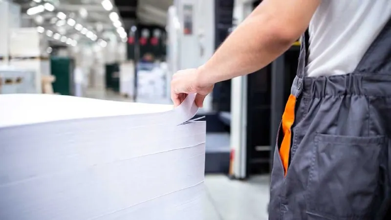

САФУ и «Торин» сконструируют бумагоделательную линию для прототипирования продукции ЦБП 🌳 Северный (Арктический) федеральный университет им. М.В. Ломоносова подписал контракт с архангельской компанией «Торин» на изготовление технологической линии для получения бумаги, сообщили в пресс-службе вуза. Работа ведётся в русле федпроекта по наукоёмким разработкам в области…
